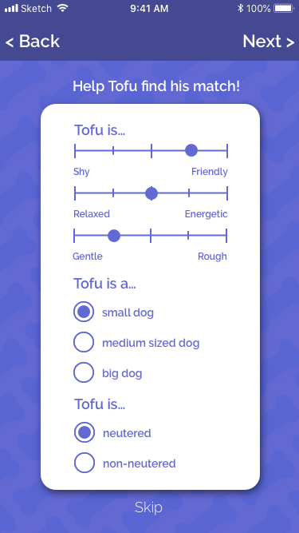

2018 - Self Initiated Project
UX - Visual Design - Prototype
Meet dogs near you.


Many dogs like playing with other dogs but sometimes their humans are a bit concerned with who they are
playing with. Will the dogs get along? Will one of the dogs be aggressive? What if they have fleas?
I wanted to to give dog owners greater control over meeting and socializing their furbabies with other dogs nearby.
I created Barkbuds as a mobile app to allow users to narrow down others dogs they may see by building a profile and connecting with dogs that match the profile desired.
I wanted to to give dog owners greater control over meeting and socializing their furbabies with other dogs nearby.
I created Barkbuds as a mobile app to allow users to narrow down others dogs they may see by building a profile and connecting with dogs that match the profile desired.
Define/Scope
While there are a lot of apps and services out there for dog sitting or walkers such Rover or Bark-n-Borrow or apps tailored to dating while with a dog, there are very few options for users to casually
introduce their dogs to other dogs in a controlled environment. Some shelters and community groups
would organize larger meetups for dog owners but can often be overly stimulating for some dogs.
">
As the goal was to create a friendly and intuitive social networking platform for dogs, I turned to
traditional dating apps to model my problem space using familiar
iteractions like carding sorting and swiping in a profile based environment. This also allowed me to explore monetization models that these apps used for their own revenue between freemium subscriptions and integrated ads. I selected to model our platform on OkCupid,
which had a comprehensive onboarding process to better define a suitable match.
Ideate
When interviewing users, dog temperament came up consistently as a concern for users when hoping to pair
up their dogs. A challenge that arose in the research was that while most users agreed temperament
was important to consider, there was no clear definition between users of what that meant when they referred to temperament.
Rather than having temperament described in one static attribute, I took the most common behaviours which users identified as important for them and allowed users to select on a spectrum the closest to what they believe described their dog.
Rather than having temperament described in one static attribute, I took the most common behaviours which users identified as important for them and allowed users to select on a spectrum the closest to what they believe described their dog.
Artifacts
Raleway Semi Bold
ABCDEFGHIJKLMNOPQRSTUVWXYZ
Raleway Light
ABCDEFGHIJKLMNOPQRSTUVWXYZ
# 444991
# 6369D3
# F34D4D
# 9F9B9B




A large focus of this project was designing an appropriate and user friendly onboarding process that
didn’t feel like too much work to get setup and start looking at profiles.
With conventional dating apps, users typically only need to make two profiles, information about themselves and highlight what their looking for in a match.
Barkbuds builds three profiles: the user’s, their dog, and the prospective matching dog. The initial onboarding focuses on the user and their dog. Additional prompts are spaced out throughout use of the app to continue building the profile.
Users are still able to skip and complete these parts later.
With conventional dating apps, users typically only need to make two profiles, information about themselves and highlight what their looking for in a match.
Barkbuds builds three profiles: the user’s, their dog, and the prospective matching dog. The initial onboarding focuses on the user and their dog. Additional prompts are spaced out throughout use of the app to continue building the profile.
Users are still able to skip and complete these parts later.
Animations were designed through Principle to make every interaction dynamic and engaging.


Iterations
My iteration process started with lo-fi wireframes, taking into consideration early user stories and
flows. As the timeline for the project was short, once the lo-fi wireframes passed hallway testing, I
moved into higher fidelity designs.
This didn’t give me the opportunity to get richer feedback from users.
This didn’t give me the opportunity to get richer feedback from users.
Feedback


My higher fidelity iterations included varying designs and colours, which eventually were refined based
off of AB testing, user feedback and accessibility tools such as contrast analyzer.
Prototype
What's Next
While this project is unlikely to continue through product development, it was a really fun introduction
to
several new tools that I now work with quite frequently for hi-fi prototyping including inVision and
Principle.
What I think is possibly the biggest take-away for me is the idea that while the needs and concerns of users can often be the same, users percieve and approach that problem-space in radically different ways. In recognizing something like temperament as a complex idea, it allows me to think of my users in a richer context and design more appropriately.
What I think is possibly the biggest take-away for me is the idea that while the needs and concerns of users can often be the same, users percieve and approach that problem-space in radically different ways. In recognizing something like temperament as a complex idea, it allows me to think of my users in a richer context and design more appropriately.